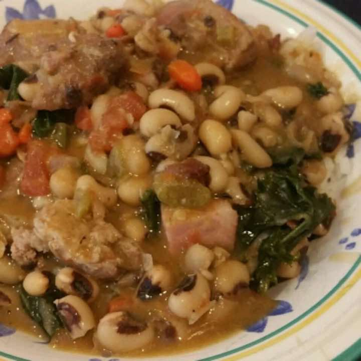

← Recipes

Black-Eyed Peas with Pork and Greens
Main Dish - Soup
Source:
allrecipes.com
Serving size: 8
Prep time: 25 mins
Cook time: 2 hours
Ingredients
1 pound dried black-eyed peas
1 pound pork neck bones
3 slices bacon, cut into 1/2-inch pieces
1 cup diced onion
1 cup diced celery
1 cup diced carrot
3 cloves garlic, chopped
6 cups cold water
1 bay leaf
1 teaspoon dried thyme
0.5 teaspoon ground cumin
0.5 teaspoon ground black pepper
1 pinch cayenne pepper, or to taste
1 (10 ounce) can diced tomatoes with green chile peppers
1 teaspoon salt
6 ounces smoked ham, diced
1 bunch kale, ribs removed and leaves torn into pieces
Directions
Place black-eyed peas into a large container and cover with several inches of cool water; let stand 8 hours to overnight. Drain and set aside.
Cook pork necks and bacon in a Dutch oven over medium heat until lightly browned, about 5 minutes.
Stir in onion, celery, and carrot; cook and stir until softened, 6 to 7 minutes. Stir in garlic and cook 1 minute.
Pour cold water and black-eyed peas into pork mixture; increase heat to high.
Stir in bay leaf, thyme, cumin, black pepper, and cayenne pepper. Bring mixture to a simmer, reduce heat to low, cover, and simmer for 45 minutes.
Stir in tomatoes and salt. Simmer uncovered until beans are tender, about 40 minutes.
Remove neck bones from mixture; separate any meat from bones, return meat to Dutch oven, and discard bones.
Stir in diced ham and kale; cook until greens are tender, 10 to 15 minutes. Serve over rice.
Nutrition
Amount per Serving
Calories
: 463
Total Fat
: 15g
Saturated Fat
: 5g
Cholesterol
: 65mg
Sodium
: 1233mg
Total Carbohydrate
: 46g
Dietary Fiber
: 9g
Sugars
: 6g
Protein
: 37g